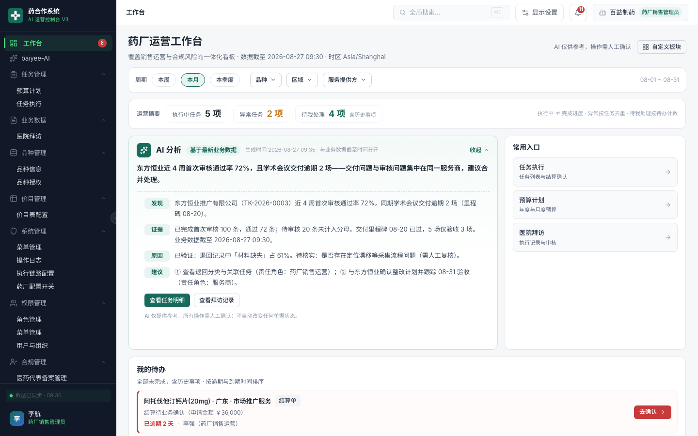
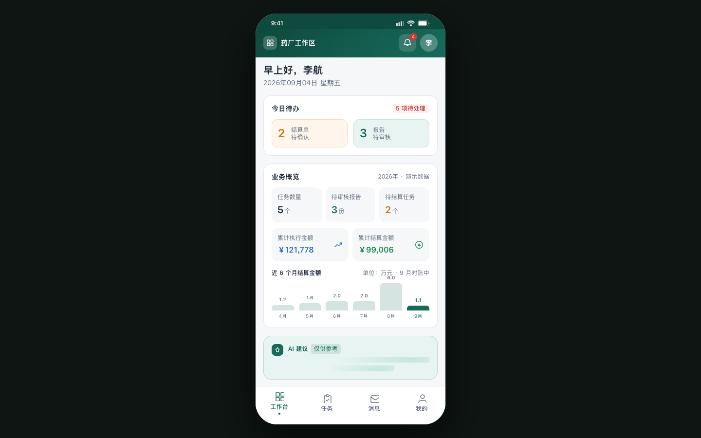
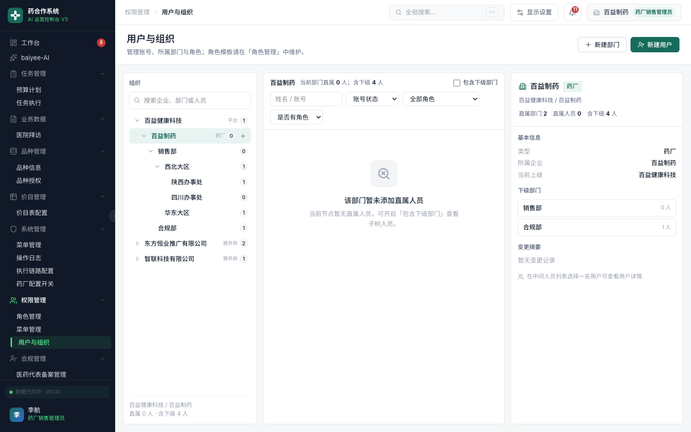
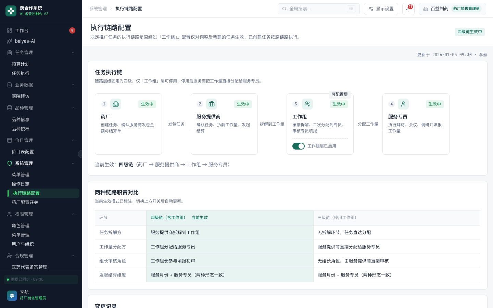
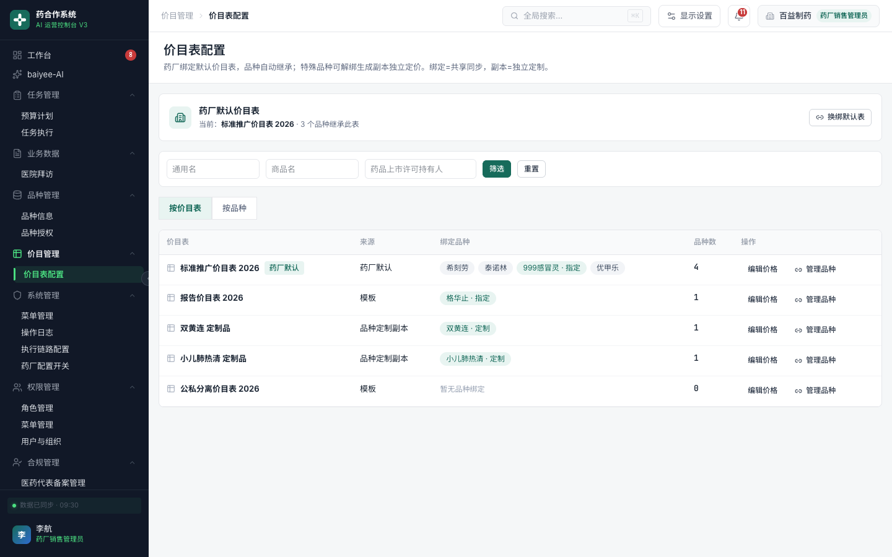
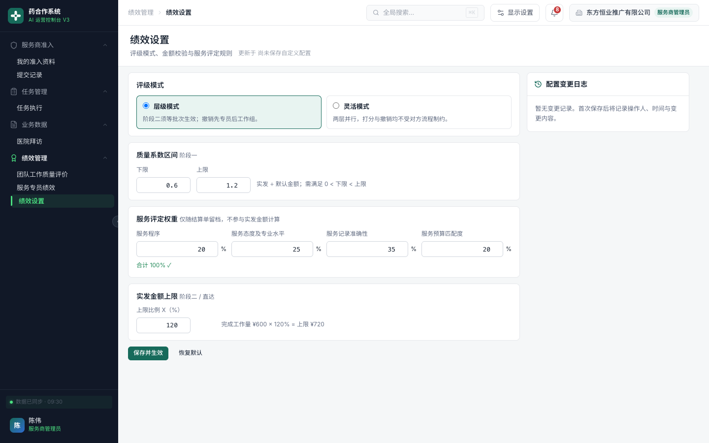
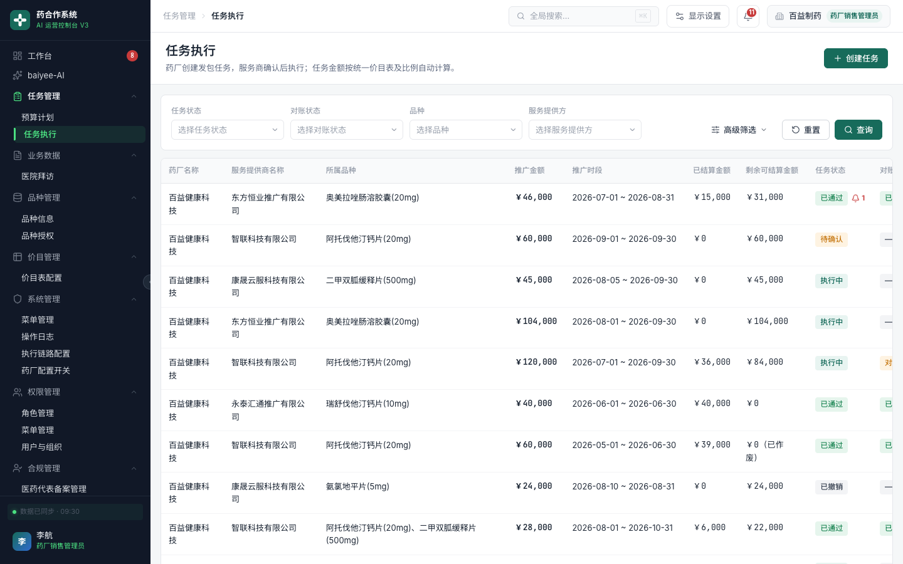
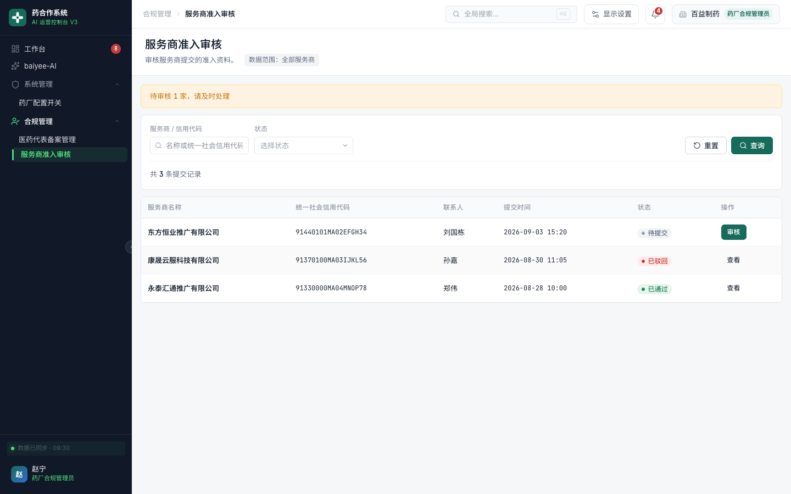
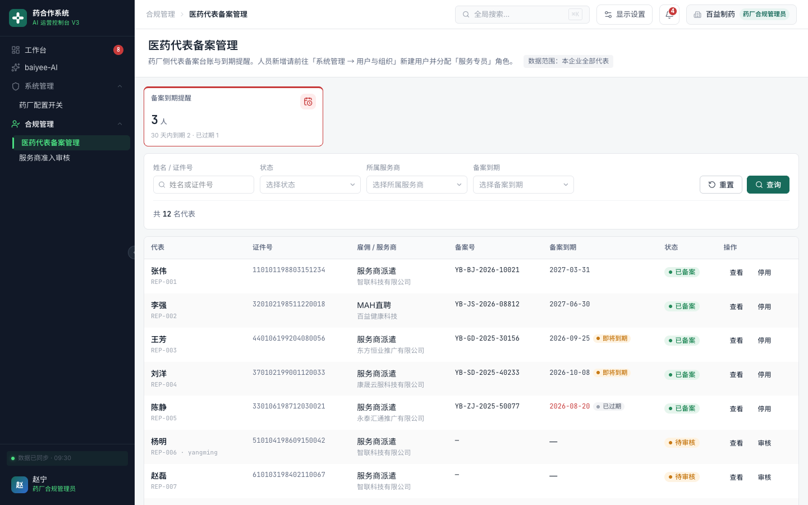

药合作系统
重构设计
方案汇报
从 PC 管理后台到移动端 App 的一体化全线方案


汇报人 / 2026 年 9 月
药合作系统 · 重构设计
02
汇报框架
从重构动因到交付演示，按业务主链展开
01为什么重构
背景与目标
背景与目标
02总体蓝图
主体、主链与底座
主体、主链与底座
03底座与配置
身份、权限、菜单、业务配置
身份、权限、菜单、业务配置
04主链与合规
任务结算与合规闭环
任务结算与合规闭环
05体验与移动端
工作台与三身份 App
工作台与三身份 App
06交付与下一步
演示路径与待确认事项
演示路径与待确认事项
01 / 背景与目标
03
为什么要重构
重构前的问题
流程与权限失配
- 流程割裂，链路不透明
- 权限粗糙，菜单混用
- 配置靠开发，改动牵全身
- 一线靠微信，事后补记录
本次重构三个目标
让系统支撑真实业务
- 合规穿透：全链路留痕
- 配置驱动：业务规则可配
- 三端一体：一套身份数据
一条业务主链 + 一套权限底座 + 一个配置中心
02 / 总体蓝图
04
一页看懂新系统
三类主体协同，一条主链贯穿，一套底座支撑
三类主体
药厂
服务商
服务专员
一条主链
预算计划
›
任务执行
›
拜访 / 报告
›
生成结算单
›
绩效评价
一套底座
多方式登录 · 用户与组织 · 角色授权 · 菜单 · 操作审计
配置中心
执行链路 · 价目表 · 药厂合规开关 · 绩效设置
移动端延伸
三身份 App 与 PC 后台同一套数据口径
所有角色走同一条主链、用同一套数据，差异仅在菜单与数据范围。
03 / 底座重构
05
登录与用户组织
01账号密码、企业微信、微信扫码
02组织树、用户列表、授权面板一页管理
03新增部门层，支持按部门授权与隔离
04补齐本部门及以下数据范围
05专员身份与系统账号统一来源

03 / 底座重构
06
角色、授权与菜单
药厂销售树
经营主线
预算计划
任务执行
价目表配置
执行链路配置
任务执行
价目表配置
执行链路配置
药厂合规树
合规监督
服务商准入审核
医药代表备案
拜访管理
操作审计
医药代表备案
拜访管理
操作审计
服务商树
执行交付
我的准入资料
任务承接
绩效管理
结算明细
任务承接
绩效管理
结算明细
授权与组织绑定；登录后仅见自己的菜单；关键动作全部可追溯。
04 / 配置中心
07
执行链路配置

01全局唯一执行链统一编排
02四级链 / 三级链按需启停
03修改仅影响新建任务
04停用节点以琥珀虚线绕行
05服务商承接受链路强约束
04 / 配置中心
08
价目表配置
01唯一入口管理品种、药厂与绑定关系
02药厂绑定默认表，品种自动继承
03解绑自动生成副本，改表不伤存量
04四个价格区按需展开维护
05药厂开关驱动对公 / 对私口径

04 / 配置中心
09
药厂合规开关与绩效设置
药厂配置开关
一厂一策
- 三档合规模式切换
- 切换前预览业务影响
- 规则折叠与变更记录
- 合规部门只读

层级制 / 灵活制，配合系数区间、四维权重与封顶约束。
05 / 主链重构
10
任务执行与结算

01围绕专员、月份、结算组织
02结算单两步生成，避免误操作
03概览、明细、操作三层分区
04支持按已结算数量分批收口
05报告记录随派单生成并在线审核
06 / 合规闭环
11
准入 · 备案 · 拜访
准入
谁能干
服务商发起
合规端审核

备案
谁能去
V2.1 最简台账
组织架构自动推导

拜访
干了什么
状态口径收敛
药厂只读监督
医院拜访原型
晨访 / 日访 / 夜访
晨访 / 日访 / 夜访
07 / 体验升级
12
统一工作台
01销售与合规登录即达工作台
0212 列自由网格支持拖拽缩放
03布局保存，千人千面
04编辑态提供工具条与占位提示
05提高 AI 分析板块权重
08 / 移动端 App
13
三身份同构
药厂
审批与看板
服务商
承接与派单
服务专员
一线执行
接任务 → 医院拜访 → 拍照上传报告 → 查看结算；与 PC 后台同一口径。
09 / 交付与演示
14
交付物与现场演示
交付清单
已完成设计，可现场演示
- PC 管理后台高保真原型
- 移动端三身份 App 原型
- 30+ 篇设计方案文档
- 全流程可交互走查
现场演示流程
登录切换
›
工作台
›
任务执行
›
结算单
›
移动端交报告
›
合规回溯
10 / 下一步
15
待确认事项与下一步计划
待业务确认
请在评审中拍板
- 价目表目标模型
- 绩效默认模式与区间
- 移动端 Figma 视觉方向
需求冻结
各方案评审
各方案评审
一期开发
身份权限 + 任务主链
身份权限 + 任务主链
二期开发
配置中心 + 合规闭环
配置中心 + 合规闭环
三期开发
移动端 App
移动端 App
以高保真原型作为开发验收基准，降低理解偏差与返工。